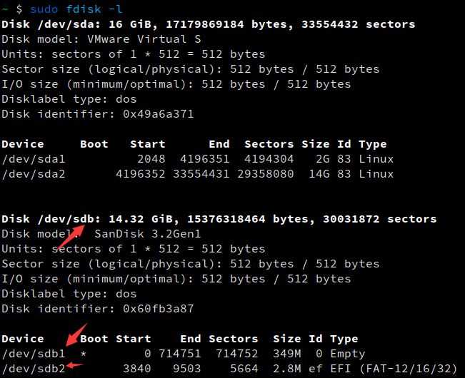
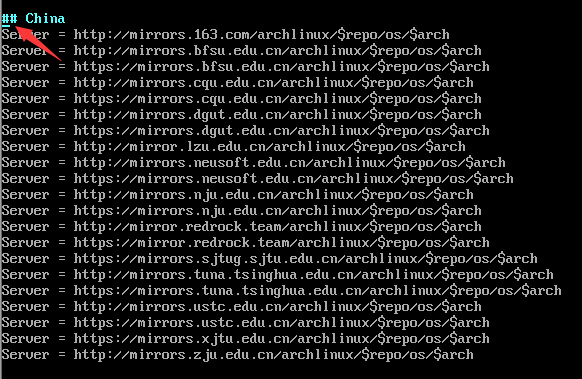
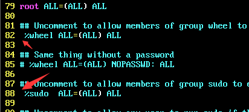

Arch Linux
Arch Linux 全家桶
前言：强烈建议观看 Arch Wiki 进行安装配置
安装
0x00安装前准备阶段
1、到各大镜像站下载Arch Linux最新镜像文件以及.sig文件并验证
$ md5sum archlinux-2021.01.01-x86_64.iso
48d67c59afcd2e39f25799efcc2b1999 archlinux-2021.01.01-x86_64.iso
$ sha1sum archlinux-2021.01.01-x86_64.iso
c3082b13d3cf0a253e1322568f2fd07479f86d52 archlinux-2021.01.01-x86_64.iso
# 在Arch Linux上验证签名
$ pacman-key -v archlinux-version-x86_64.iso.sig
# 在其他Linux上验证签名
$ gpg --keyserver pgp.mit.edu --keyserver-options auto-key-retrieve --verify archlinux-2021.01.01-x86_64.iso.sig此处验证可以忽略，若下载采用HTTP协议则尽量验证一下
2、刻录镜像
Windows：软件刻录
rufus、UltraISO软碟通
Linux：DD
$ sudo fdisk -l #查看各个磁盘，此处我的U盘为/dev/sdb,其被分成两个分区分别是/dev/sdb1、/dev/sdb2
# 需要全部umount
$ sudo umount /dev/sdb1 /dev/sdb2
# 然后使用dd命令将镜像写入到U盘所在的分区，其中"/tmp/archlinux-2021.01.01-x86_64.iso"为镜像所在位置
sudo dd if=/tmp/archlinux-2021.01.01-x86_64.iso of=/dev/sdb bs=4M
# 另开一个终端查看进度
$ ps aux | grep dd | grep -v "grep"
# 刻录结束后运行sync命令检查，sync结束后就可以拔出U盘了
$ sync0x01 开始安装(安装过程中皆为root权限)
1、联网
#检查网络接口
$ ip link
# 对于有线以太网，使用dhcpcd获取IP
$ dhcpcd
# 对于wifi网络使用iwctl连网，不会用就百度
$ iwctl- 都不行的话就用手机USB网络共享，手机连Wifi也可以
2、验证启动方式
$ ls /sys/firmware/efi/efivars- 如果命令没有错误地显示了目录，则系统以 UEFI 模式启动。如果目录不存在，系统可能以 BIOS 模式或 CSM 模式启动。
3、更新系统时间
$ timedatectl set-ntp true4、建立硬盘分区
$ fdisk -l #查看系统分区，例如：/dev/sda、/dev/nvme0n1等。
$ fdisk /dev/nvme0n1 #对分区进行操作，此时命令行变为"Command (m for help):"开头，输入m或help即可获取帮助文档能用到的操作: n：新建 w：写入 q：退出
根据需求进行分区，UEFI 与 GPT类型分区表 (BIOS 与 MBR分区表无需EFI分区) 如下：
挂载点 分区 分区类型 建议大小 /mnt/boot/efi /dev/efi_system_partition（efi 系统分区） EFI系统分区 512MB [SWAP] /dev/swap_partition（交换空间分区） SWAP交换空间 [内存] * 1.1 /mnt /dev/root_partition（根分区） Linux x86-64 根目录 (/) 剩余空间
$ fdisk -l # 分区后再使用此命令查看分区如下所示
Device Boot Start End Sectors Size Id Type
/dev/nvme0n1p1 ---- ---- --- ------- 512M -- ----
/dev/nvme0n1p2 ---- ---- --- ------- 8.8G -- ----
/dev/nvme0n1p3 ---- ---- --- ------- 460G -- ----5、格式化分区
$ mkfs.ext4 /dev/nvme0n1p3 #根分区
$ mkfs.fat -F32 /dev/nvme0n1p1 #EFI分区
$ mkswap /dev/nvme0n1p2 #交换分区如果在格式化EFI分区时提示：”WARNING: Not enough clusters for a 32 bit FAT!”，请运行
$ mkfs.fat -s2 -F32 /dev/nvme0n1p1 #或 -s1 以减小簇大小，否则 UEFI 无法读取分区。运行 mkfs.fat -s2 -F32 … 或 -s1 以减小簇大小，否则 UEFI 无法读取分区。
6、挂载分区
$ mount /dev/nvme0n1p3 /mnt #先挂载根分区
$ mkdir -p /mnt/boot/efi #创建EFI分区所在文件夹
$ mount /dev/nvme0n1p1 /mnt/boot/efi #挂载EFI分区
$ swapon /dev/nvme0n1p2 #开启SWAP分区7、安装基本系统
- 更换镜像站为国内镜像站
$ vim /etc/pacman.d/mirrorlist #找到国内镜像站
挑选自己喜欢的镜像站复制到文件首部 (也可以全部移到首部)。
- 安装基本软件
$ pacstrap /mnt base linux linux-firmware8、配置系统
$ genfstab -U /mnt >> /mnt/etc/fstab #生成fstab文件
$ cat /mnt/etc/fstab #检查文件
$ arch-chroot /mnt #Change root到新安装的系统中- 以上为U盘中的live系统，以下为安装到电脑中的系统
时区
$ ln -sf /usr/share/zoneinfo/Asia/Shanghai /etc/localtime #设置时区本地化
编辑 /etc/locale.gen 文件移除需要地区前的注释符号，例：en_US.UTF-8、zh_CN.UTF-8、zh_TW.UTF-8 UTF-8
$ locale-gen #生成locale信息
#将默认语言编码写入locale.conf文件,也可以使用en_GB.UTF-8 或 en_SG.UTF-8
$ echo LANG=en_US.UTF-8 > /etc/locale.conf网络配置
$ echo gaishishenlun > /etc/hostname # 创建 /etc/hostname 写入主机名 gaishishenlun
# 添加到hosts
$ vim /etc/hosts # 注意gaishishenlun改成自己的主机名，若有系统有永久IP，则将127.0.1.1换之。
------------------------------------------------------
127.0.0.1 localhost
::1 localhost
127.0.1.1 gaishishenlun.localdomain gaishishenlun基本设置
$ pacman -S fish # 安装一个喜欢的shell，zsh 或 fish都可以
$ passwd # 修改root密码
$ useradd -m -G wheel -s /usr/bin/fish gaishsihenlun # 创建一个用户
# -m 创建用户主目录、-G添加附加用户组，wheel为管理员组、-s选择默认shell、gaishishenlun为用户名
$ passwd gaishishenlun # 修改gaishishenlun用户的密码
$ pacman -S iw wpa_supplicant dialog netctl dhcpcd # 网络所需软件
$ pacman -S sudo # 安装权限管理软件sudo，安装后修改/etc/sudoers，去掉82行以及88行的注释
安装引导程序（GRUB）
根据引导类型选择一个进行安装
- UEFI引导：
$ pacman -S grub efibootmgr # 安装所需软件
$ grub-install --target=x86_64-efi --efi-directory=/boot/efi --bootloader-id=GRUB # 安装引导
$ grub-mkconfig -o /boot/grub/grub.cfg # 生成cfg文件- MBR引导
$ pacman -S grub # 安装所需软件
$ grub-install --target=i386-pc /dev/nvme0n1 #nvme0n1为磁盘，而不是某个分区
$ grub-mkconfig -o /boot/grub/grub.cfg # 生成cfg文件- 上述安装过程中无错误出现即为安装成功，否则必须重新安装。
0x02 重启、结束安装
$ exit # 退出chroot环境
$ umount /mnt # 卸载所有挂载的分区
$ reboot #重启计算机，关机后移除安装介质（U盘）至此，Arch Linux 安装成功
系统配置
0x00 软件
$ sudo pacman -S curl wget gcc make cmake pkg-config git xterm fakeroot binutils # 一些基本软件0x00 X 窗口管理系统
$ sudo pacman -S xorg xorg-xinit # xorg为X服务基本服务以及一些软件、xorg-xinit为手动启动桌面软件0x01 dwm窗口管理器
1、克隆源代码
# 建议事先创建好文件夹、方便管理文件
$ git clone https://git.suckless.org/dwm # 极简主义窗口管理器
$ git clone https://git.suckless.org/dmenu # 一个软件启动菜单
$ git clone https://git.suckless.org/st # 简单的终端2、构建
$ cd dmenu/ # 进入dmenu目录
$ sudo make clean install # 这里先构建dmenu(无需配置)，等下dwm要用得到，不然会很尴尬
$ cd st/ # 进入st目录
$ sudo make clean install # dwm默认终端为st，先构建暂不配置，使用官方配置
$ cd dwm/ # 进入dwm目录
$ sudo make clean install # 构建dwm(官方配置)修改/etc/X11/Xinit/xinitrc在最后一行加入exec dwm，注意前一行尾部要有&.
然后在tty界面输入startx启动.
3、dwm的一些默认设置
dwm默认的 MODKEY 为 Alt 键。
Alt + Shitf + Return(回车) 打开终端 (默认为st)
Alt + P 打开启动菜单
Alt + Shitf + q 关闭dwm (也可以在命令行输入killall dwm)
4、个性化配置dwm
0x02 美化
$ sudo pacman -S feh picom xfce4-power-manager alsa-utils
# feh为壁纸软件、picom可以透明窗口拥有毛玻璃特效、alsa-utils为声音组件
2、polybar
$ yay -S polybar # 代替dwm的状态显示器，依赖尽量都安装了
$ sudo pacman -S libmpdclient mpd # 要使用mpd模块，需要安装这两个未完待续
软件
基本工具
sudo pacman -S vim curl wget git yay查看系统信息
sudo pacman -S screenfetch neofetch浏览器
sudo pacman -S firefox chromium媒体
sudo pacman -S netease-cloud-music #网易云 sudo pacman -S mpv #轻量视频播放器输入法
sudo pacman -S fcitx-im sudo pacman -S fcitx-configtool配置一下
sudo vim ~/.xprofile添加：export GTK_IM_MODULE=fcitx export QT_IM_MODULE=fcitx export XMODIFIERS="@im=fcitx"编辑器
sudo pacman -S atom #类似code有很多插件 sudo pacman -S typora #好用的markdown编辑器办公软件
sudo pacman -S unrar unzip p7zip sudo pacman -S wps #wps一套 sudo pacman -S ttf-wps-fonts #wps字体Shell
sudo pacman -S zsh #两个Shell都不错，选一个就可以 sudo pacman -S fish如果用zsh可以安装oh-my-zsh:
sh -c "$(curl -fsSL https://raw.github.com/ohmyzsh/ohmyzsh/master/tools/install.sh)"设计
sudo pacman -S pencil #免费开源界面原型图绘制工具 sudo pacman -S gimp #修图开发
sudo pacman -S make cmake clang nodejs npm goland maven gcc jdk8-openjdk sudo pacman -S pycharm-professional #Python IDE sudo pacman -S intellij-idea-ultimate-edition #JAVA IDE sudo pacman -S goland #Go IDE sudo pacman -S qtcreator #一款QT开发软件渗透
sudo pacman -S nmap
sudo pacman -S sqlmap
sudo pacman -S lynis
sudo pacman -S ettercap
sudo pacman -S wireshark
sudo pacman -S aircrack-ng
sudo pacman -S metasploit
sudo pacman -S Maltego
sudo pacman -S chntpw #破解windows密码
yay -S burpsuite
字体
中文字体
思源、文泉驿
sudo pacman-S adobe-source-han-sans-cn-fonts adobe-source-han-serif-cn-fonts
sudo pacman -S wqy-microhei wqy-bitmapfont wqy-zenhei wqy-microhei-li代码字体
sudo pacman -S nerd-fonts-code-new-roman本博客所有文章除特别声明外，均采用 CC BY-SA 4.0 协议 ，转载请注明出处！